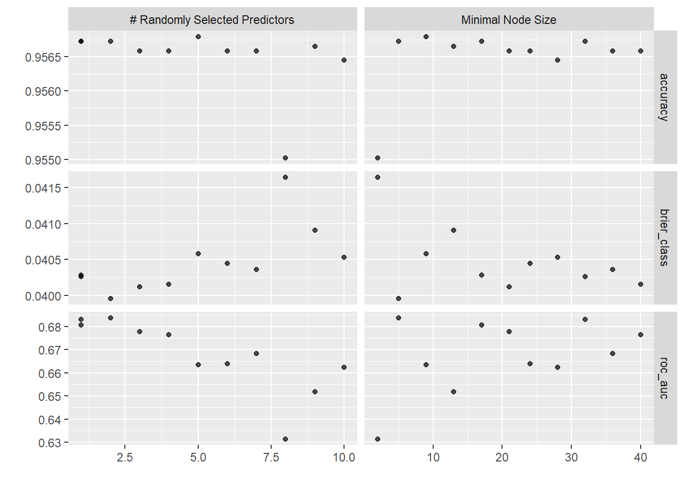
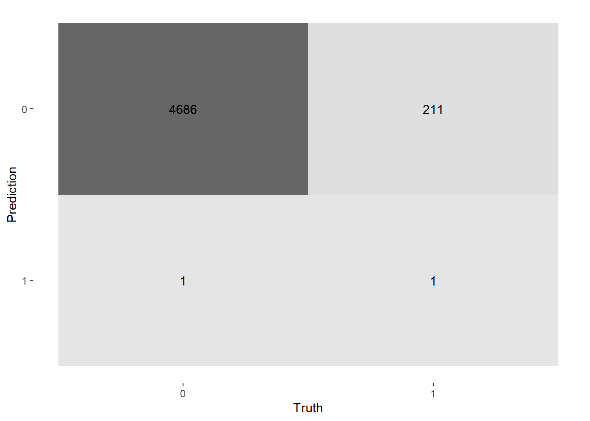
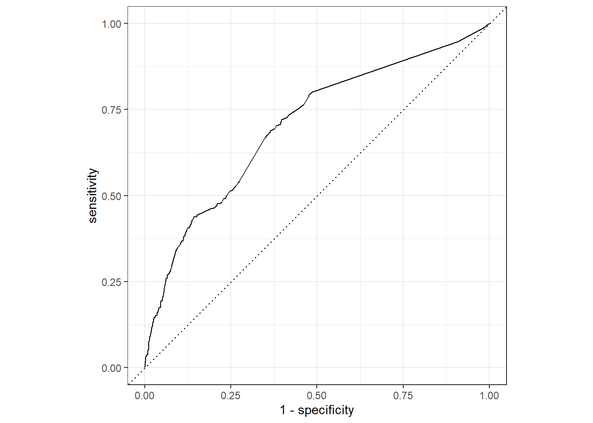
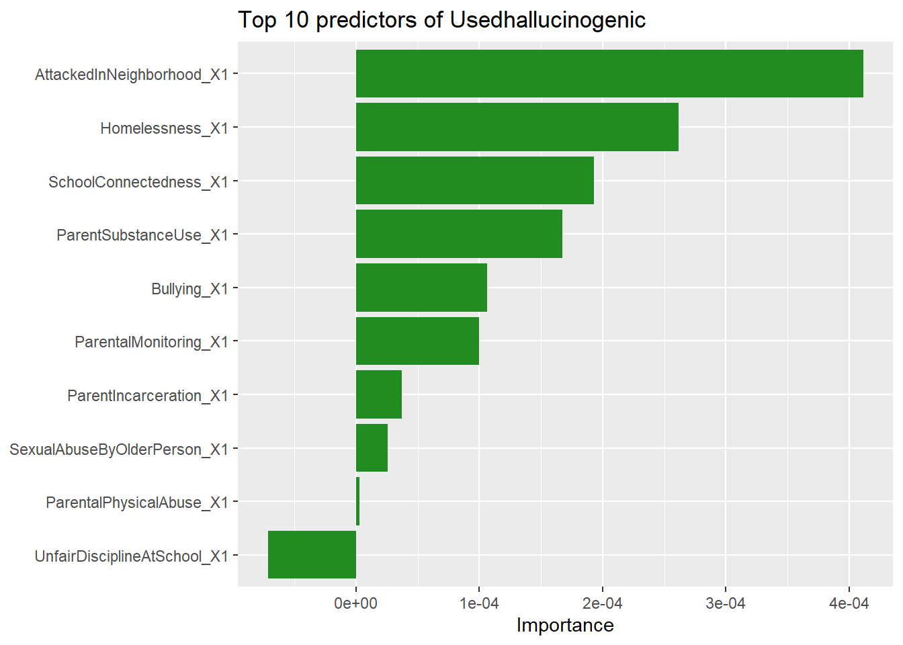

library(tidyverse)
library(tidymodels)
library(MLearnYRBSS)
library(janitor)
library(skimr)
library(vip)
library(here)Random Forests
In this note, we use random forests to predict teen weapon-carrying behavior in schools.
Setup
Load cached data
analysis_split <- readRDS(here("models", "data", "analysis_split.rds"))
analysis_data <- readRDS(here("models", "data", "analysis_data.rds"))
analysis_train <- readRDS(here("models", "data", "analysis_train.rds"))
analysis_test <- readRDS(here("models","data", "analysis_test.rds"))We set the folds manually here, as we need to specify the strata, which we did not do in the data section.
set.seed(2023)
analysis_folds <- vfold_cv(analysis_train, v = 5, strata = WeaponCarryingSchool)
analysis_folds# 5-fold cross-validation using stratification
# A tibble: 5 × 2
splits id
<list> <chr>
1 <split [11756/2940]> Fold1
2 <split [11757/2939]> Fold2
3 <split [11757/2939]> Fold3
4 <split [11757/2939]> Fold4
5 <split [11757/2939]> Fold5Sanity check: class balance
analysis_train |>
tabyl(WeaponCarryingSchool) |>
adorn_pct_formatting(0) |>
adorn_totals() WeaponCarryingSchool n percent
0 14060 96%
1 636 4%
Total 14696 -analysis_test |>
tabyl(WeaponCarryingSchool) |>
adorn_pct_formatting(0) |>
adorn_totals() WeaponCarryingSchool n percent
0 4687 96%
1 212 4%
Total 4899 -Both sets have the same proportions, as before.
Workflow
Recipe (Preprocessing)
The usual preprocessing step:
weapon_carry_recipe <-
recipe(WeaponCarryingSchool ~ ., data = analysis_train) |>
step_impute_mode(all_nominal_predictors()) |>
step_impute_mean(all_numeric_predictors()) |>
step_dummy(all_nominal_predictors())
weapon_carry_recipe── Recipe ──────────────────────────────────────────────────────────────────────── Inputs Number of variables by roleoutcome: 1
predictor: 10── Operations • Mode imputation for: all_nominal_predictors()• Mean imputation for: all_numeric_predictors()• Dummy variables from: all_nominal_predictors()No step_normalize() — like single trees, ensembles only care about order, not scale.
Random Forest Spec - ranger
ranger_spec <-
rand_forest(
mtry = tune(), # ⬅️ # of predictors sampled at each split
min_n = tune(), # ⬅️ minimum rows to keep splitting
trees = 100 # forest size (fixed, not tuned)
) |>
set_mode("classification") |>
set_engine("ranger",
importance = "permutation") # ⬅️ for vip() later
ranger_specRandom Forest Model Specification (classification)
Main Arguments:
mtry = tune()
trees = 100
min_n = tune()
Engine-Specific Arguments:
importance = permutation
Computational engine: ranger We put these together in the workflow:
ranger_workflow <-
workflow() |>
add_recipe(weapon_carry_recipe) |>
add_model(ranger_spec)
ranger_workflow══ Workflow ════════════════════════════════════════════════════════════════════
Preprocessor: Recipe
Model: rand_forest()
── Preprocessor ────────────────────────────────────────────────────────────────
3 Recipe Steps
• step_impute_mode()
• step_impute_mean()
• step_dummy()
── Model ───────────────────────────────────────────────────────────────────────
Random Forest Model Specification (classification)
Main Arguments:
mtry = tune()
trees = 100
min_n = tune()
Engine-Specific Arguments:
importance = permutation
Computational engine: ranger Tuning
We are tuning two main knobs:
mtry= how many predictors to consider at each split. Smallmtryleads to more decorrelation between trees, meaning lower variance.min_n= minimum rows needed to split a node. Largermin_nleads to shallower trees, thus less overfitting.
trees is fixed at 100, more trees rarely hurt, but it just makes the process slower.
doParallel::registerDoParallel()
set.seed(46257)
ranger_tune <-
tune_grid(
ranger_workflow,
resamples = analysis_folds,
grid = 11 # ⬅️ tidymodels picks 11 sensible combos for us
)i Creating pre-processing data to finalize 1 unknown parameter: "mtry"doParallel::stopImplicitCluster()Show the best candidates
Top 5 hyperparameter combos, ranked by mean ROC AUC across the 5 folds.
show_best(ranger_tune, metric = "roc_auc")# A tibble: 5 × 8
mtry min_n .metric .estimator mean n std_err .config
<int> <int> <chr> <chr> <dbl> <int> <dbl> <chr>
1 2 5 roc_auc binary 0.684 5 0.0114 pre0_mod03_post0
2 1 32 roc_auc binary 0.683 5 0.0109 pre0_mod02_post0
3 1 17 roc_auc binary 0.681 5 0.0104 pre0_mod01_post0
4 3 21 roc_auc binary 0.678 5 0.0145 pre0_mod04_post0
5 4 40 roc_auc binary 0.676 5 0.0157 pre0_mod05_post0# Visualize the tuning results
autoplot(ranger_tune) 
Pick the best combo
Our winning candidate:
best_rf <- select_best(ranger_tune, metric = "roc_auc")
best_rf# A tibble: 1 × 3
mtry min_n .config
<int> <int> <chr>
1 2 5 pre0_mod03_post0But we won’t commit this to the testing set yet — let’s check it first.
Sanity-Check Before Committing
Ranking the performance of our chosen combo
An honest, CV-estimated performance for our single chosen Random Forest.
ranger_workflow |>
finalize_workflow(best_rf) |>
fit_resamples(resamples = analysis_folds) |>
collect_metrics()# A tibble: 3 × 6
.metric .estimator mean n std_err .config
<chr> <chr> <dbl> <int> <dbl> <chr>
1 accuracy binary 0.957 5 0.00173 pre0_mod0_post0
2 brier_class binary 0.0400 5 0.00162 pre0_mod0_post0
3 roc_auc binary 0.683 5 0.0115 pre0_mod0_post0Looks good - locking in.
Evaluate the last test set
finalize_workflow() plugs the winning mtry and min_n into the workflow. We are now committed.
final_wf <- finalize_workflow(ranger_workflow, best_rf)
final_wf══ Workflow ════════════════════════════════════════════════════════════════════
Preprocessor: Recipe
Model: rand_forest()
── Preprocessor ────────────────────────────────────────────────────────────────
3 Recipe Steps
• step_impute_mode()
• step_impute_mean()
• step_dummy()
── Model ───────────────────────────────────────────────────────────────────────
Random Forest Model Specification (classification)
Main Arguments:
mtry = 2
trees = 100
min_n = 5
Engine-Specific Arguments:
importance = permutation
Computational engine: ranger Let’s use our last_fit() function.
weapon_last_fit <-
last_fit(
final_wf,
split = analysis_split,
metrics = metric_set(accuracy, kap, roc_auc, sensitivity, specificity)
)
weapon_last_fit# Resampling results
# Manual resampling
# A tibble: 1 × 6
splits id .metrics .notes .predictions .workflow
<list> <chr> <list> <list> <list> <list>
1 <split [14696/4899]> train/test spl… <tibble> <tibble> <tibble> <workflow>Test-set metrics
We now collect our metrics.
collect_metrics(weapon_last_fit)# A tibble: 5 × 4
.metric .estimator .estimate .config
<chr> <chr> <dbl> <chr>
1 accuracy binary 0.957 pre0_mod0_post0
2 kap binary 0.00854 pre0_mod0_post0
3 sensitivity binary 1.000 pre0_mod0_post0
4 specificity binary 0.00472 pre0_mod0_post0
5 roc_auc binary 0.704 pre0_mod0_post0These look similar to the CV of our best ranger workflow. Accuracy = 0.957, but this is misleading because the outcome is highly imbalanced. At the default classification threshold, the random forest predicts every student as a non-carrier, producing sensitivity of 0 and specificity of 1. Cohen’s kappa is 0, indicating that the hard classifications provide no improvement over a trivial majority-class prediction. Nevertheless, the ROC AUC of approximately 0.715 shows that the predicted probabilities contain meaningful discriminatory information.
Test-set predictions
Let us now test out predictions!
predictions_testing <-
weapon_last_fit |>
collect_predictions() |>
select(-.config, -.row)
predictions_testing# A tibble: 4,899 × 5
.pred_class .pred_0 .pred_1 id WeaponCarryingSchool
<fct> <dbl> <dbl> <chr> <fct>
1 0 0.974 0.0262 train/test split 0
2 0 0.948 0.0519 train/test split 0
3 0 0.975 0.0254 train/test split 0
4 0 0.975 0.0254 train/test split 0
5 0 0.974 0.0262 train/test split 0
6 0 0.964 0.0364 train/test split 0
7 0 0.957 0.0432 train/test split 0
8 0 0.886 0.114 train/test split 1
9 0 0.865 0.135 train/test split 0
10 0 0.956 0.0441 train/test split 0
# ℹ 4,889 more rowsConfusion matrix
predictions_testing |>
conf_mat(truth = WeaponCarryingSchool, estimate = .pred_class) |>
autoplot(type = "heatmap")
ROC curve on the test set
predictions_testing |>
roc_curve(truth = WeaponCarryingSchool, .pred_1, event_level = "second") |>
autoplot()
Looks good! We’re hugging the top-left hand side.
Variable Importance
weapon_last_fit |>
extract_fit_parsnip() |>
vi() |>
slice_max(Importance, n = 10) |>
ggplot(aes(Importance, fct_reorder(Variable, Importance))) +
geom_col(fill = "forestgreen") +
labs(y = NULL, title = "Top 10 predictors of Usedhallucinogenic")